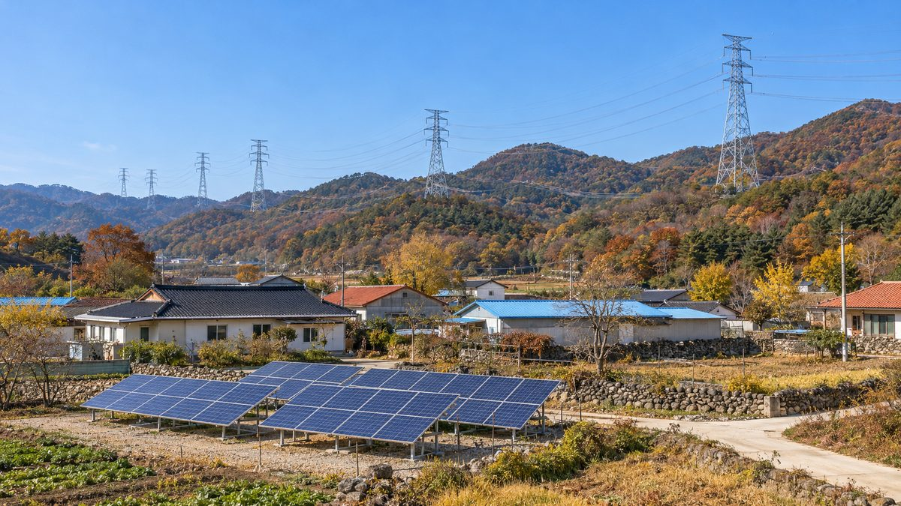

송전망 주변 마을 태양광에 설치비 우선 지원…입지선정엔 주민 참관·대안 제안 허용

기후에너지환경부, 국가기간전력망법 시행령 등 입법예고…지자체 지원금 3분의 2 이내 주변지역 배분
기후에너지환경부가 21일 국가기간전력망법 시행령과 관련 고시 2건, 송·변전설비 입지선정위원회 구성·운영 기준 개정안을 내놓았다. 9월 15일 국무회의에 보고된 송전망 건설 수용성 제고방안의 후속 조치로, 입법예고는 10월 22일부터 12월 1일까지, 행정예고 의견 수렴은 11월 11일까지 이어진다. 개정안은 가공선로 1km당 20억원인 지자체 지원금 가운데 3분의 2 이내를 송·변전설비 주변지역에 돌리고, 마을이 태양광 사업을 하면 설치비용을 먼저 반영하며, 지방정부·한국전력공사와 함께 '계통햇빛소득마을' 선도사업 후보를 찾아 사업성 검토와 주민참여 절차를 돕도록 했다. 입지선정 과정에서는 위원회 구성 전 시·군·구 설명회를 2회에서 3회로 늘리고, 주민의 회의 참관을 원칙적으로 허용하며, 후보 입지를 2곳 이상 비교하고 주민이 대안 경과지나 부지를 서면으로 낼 수 있게 했다. 이재식 전력망정책관은 주민이 "사업 초기부터 입지선정에 참여할 수 있도록" 제도를 고치겠다고 밝혔다.
시민에너지 관점
가공선로 1km당 20억원인 지원금의 3분의 2 이내를 주변 마을로 돌리고 이를 태양광 설치에 먼저 쓰게 한 것은, 한 번 나눠 주고 끝나는 보상을 마을이 오래 가져갈 발전소로 바꾸는 방향으로 보인다. 송전탑 갈등을 돈으로 덮으려 한다는 우려도 나올 수 있지만, 이번 개정안은 후보 입지 비교와 주민의 대안 제안, 회의 참관을 수익 공유와 함께 묶었다는 점에서 다르다. 시민 2,800명이 풍력기 한 기를 함께 소유한 덴마크 튀보뢴처럼, 주민이 설비의 주인이 될 때 지원금은 일회성 소득이 아니라 지역에 남는 자산이 된다. 의견 수렴 기간 안에 주민 소유 비율과 수익 배분 원칙부터 시행령과 선도사업 기준에 분명히 적어 넣어야 한다.
그래서 어떻게 할 것인가. 송전망 주변 주민과 마을은 12월 1일까지인 입법예고 기간과 11월 11일까지인 행정예고 의견 수렴 기간에, 주민 소유 비율과 수익 배분 원칙을 담아 달라는 의견을 낼 수 있다. 지자체는 지원금이 태양광 설치에 먼저 쓰일 수 있도록 마을과 함께 사업 계획을 미리 준비하고, 한국전력공사와 계통 여건을 확인해 둘 수 있다. 정부는 계통햇빛소득마을 선도사업 후보를 고를 때 마을 협동조합이 실제로 소유와 운영을 맡는지를 기준으로 삼아야 한다. 입지선정위원회 회의를 처음 참관하거나 대안을 내는 주민을 위해 설명 자료와 상담 지원도 함께 마련해야 한다.
출처: 에너지데일리 2026-10-21 송병훈 원문 보기
送電網周辺の村の太陽光に設置費を優先支援…立地選定では住民の傍聴・代案提案を認める
気候エネルギー環境部、国家基幹電力網法施行令などを立法予告…自治体支援金の3分の2以内を周辺地域に配分
韓国の気候エネルギー環境部が21日、国家基幹電力網法の施行令と関連告示2件、送変電設備の立地選定委員会の構成・運営基準の改正案を発表した。9月15日の国務会議に報告された送電網建設の受容性向上策の後続措置で、立法予告は10月22日から12月1日まで、行政予告の意見募集は11月11日まで続く。改正案は、架空線路1kmあたり20億ウォンの自治体支援金のうち3分の2以内を送変電設備の周辺地域に回し、村が太陽光事業を行う場合は設置費用を優先的に反映するほか、地方政府・韓国電力公社とともに「系統太陽光所得村」の先導事業候補を探し、事業性の検討と住民参加の手続きを支援する内容だ。立地選定では、委員会の構成前に開く市・郡・区の説明会を2回から3回に増やし、住民の会議傍聴を原則として認め、候補地を2カ所以上比較し、住民が代わりの経過地や用地を書面で提案できるようにした。イ・ジェシク電力網政策官は、住民が「事業の初期段階から立地選定に参加できるよう」制度を改めると述べた。
市民エネルギーの視点
架空線路1kmあたり20億ウォンの支援金の3分の2以内を周辺の村に回し、太陽光の設置に優先して使えるようにしたことは、一度配って終わる補償を、村が長く持ち続ける発電所に変える方向とみられる。送電鉄塔をめぐる対立をお金で覆い隠そうとしているという懸念も出かねないが、今回の改正案は候補地の比較や住民の代案提案、会議の傍聴を収益の共有と組み合わせた点で異なる。市民2,800人が風車1基を共同所有するデンマークのThyborønのように、住民が設備の所有者になるとき、支援金は一時的な所得ではなく地域に残る資産になる。意見募集の期間内に、住民の所有比率と収益配分の原則をまず施行令と先導事業の基準に明記すべきだ。
では、どうすればよいか。送電網周辺の住民と村は、12月1日までの立法予告期間と11月11日までの行政予告の意見募集期間に、住民の所有比率と収益配分の原則を盛り込むよう求める意見を出せる。自治体は支援金が太陽光の設置に優先して使われるよう、村とともに事業計画を前もって準備し、韓国電力公社と系統の状況を確かめておくことができる。政府は系統太陽光所得村の先導事業の候補を選ぶ際、村の協同組合が実際に所有と運営を担うかどうかを基準にすべきだ。立地選定委員会の会議を初めて傍聴したり代案を出したりする住民のために、説明資料と相談の支援もあわせて用意すべきだ。
出典: Energy Daily 2026-10-21 Song Byung-hoon 原文を読む
输电网周边村庄建太阳能优先补贴安装费，选址过程允许居民旁听和提出替代方案
气候能源环境部预告修订国家骨干电网法施行令等，地方政府补贴的三分之二以内分配给周边地区
韩国气候能源环境部21日公布了国家骨干电网法施行令、两项相关告示以及输变电设施选址委员会组成与运营标准的修订案。这是对9月15日向国务会议报告的提高输电网建设接受度方案的后续措施，立法预告期为10月22日至12月1日，行政预告的意见征集截至11月11日。修订案规定，将每公里架空线路20亿韩元的地方政府补贴中三分之二以内分配给输变电设施周边地区，村庄开展太阳能项目时优先计入安装费用，并与地方政府、韩国电力公社一起发掘“电网阳光收入村”先导项目候选地，支持项目可行性审查和居民参与程序。在选址过程中，委员会组成前的市郡区说明会由2次增加到3次，原则上允许居民旁听会议，候选地址至少比较2处，居民还可以书面提出替代路线或用地。电网政策官Lee Jae-sik表示，将改进制度，使居民“从项目初期就能参与选址”。
市民能源视角
把每公里架空线路20亿韩元补贴的三分之二以内转给周边村庄，并优先用于安装太阳能，似乎是把一次性发放的补偿变成村庄可以长期持有的电站。有人可能担心这是在用钱掩盖输电塔冲突，但这次修订案把候选地比较、居民替代方案和会议旁听与收益共享捆绑在一起，这一点有所不同。正如丹麦Thyborøn有2,800名市民共同拥有一台风机，居民成为设施的主人时，补贴就不是一次性收入，而是留在地方的资产。应在意见征集期内，先把居民持股比例和收益分配原则明确写进施行令和先导项目标准。
那么，该怎么做？输电网周边的居民和村庄可以在截至12月1日的立法预告期和截至11月11日的行政预告意见征集期内，提出写入居民持股比例和收益分配原则的意见。地方政府可以与村庄一起提前准备项目计划，使补贴能优先用于安装太阳能，并事先与韩国电力公社确认电网条件。政府在遴选电网阳光收入村先导项目候选时，应以村合作社是否真正负责持有和运营为标准。还应为首次旁听选址委员会会议或提出替代方案的居民，同时准备说明材料和咨询支持。
来源: Energy Daily 2026-10-21 Song Byung-hoon 查看原文
Korea to prioritize solar installation costs for villages near transmission lines and open siting to residents
Climate, Energy and Environment Ministry gives notice of grid law decree; up to two-thirds of local subsidies to go to surrounding areas
Korea's Ministry of Climate, Energy and Environment on the 21st released amendments to the enforcement decree of the National Backbone Power Grid Act, two related notices and the rules on forming and running siting committees for transmission and substation facilities. The package follows up on a plan to improve public acceptance of grid construction reported to the Cabinet on September 15, with legislative notice running from October 22 to December 1 and comments on the administrative notice accepted until November 11. Up to two-thirds of the subsidy paid to local governments, 2 billion won per kilometer of overhead line, would go to areas around the facilities, villages that run solar projects would have installation costs reflected first, and the ministry would work with local governments and Korea Electric Power Corporation to find candidates for pilot "Grid Sunlight Income Villages" and support feasibility reviews and resident participation. In siting, briefings in each city, county or district before a committee is formed would rise from two to three, residents would in principle be allowed to observe meetings, at least two candidate sites would be compared, and residents could propose alternative routes or sites in writing. Lee Jae-sik, the ministry's director general for power grid policy, said the rules would be changed so residents can take part in siting "from the early stage of a project."
Citizen Energy View
Steering up to two-thirds of a subsidy worth 2 billion won per kilometer of line to nearby villages, and putting solar installation first in line for that money, appears to turn a one-off payout into a power plant the village can hold for the long term. Some may worry this is an attempt to paper over transmission tower disputes with money, but the package differs in tying revenue sharing to site comparison, resident alternatives and open meetings. As in Denmark's Thyborøn, where 2,800 citizens co-own a single turbine, a subsidy becomes an asset that stays in the community, not one-time income, when residents own the facility. Within the comment period, resident ownership shares and revenue-sharing principles should be written clearly into the decree and the pilot project criteria first.
So what should be done? Residents and villages near transmission lines can submit comments during the legislative notice period, which runs to December 1, and the administrative notice comment period, which runs to November 11, asking that resident ownership shares and revenue-sharing principles be written in. Local governments could prepare project plans with villages in advance so that the subsidy can go to solar installation first, and check grid conditions with KEPCO. When choosing candidates for the grid Sunlight Income Village pilots, the government should use as its yardstick whether a village cooperative will actually own and run the plant. Explanatory materials and advice should also be provided for residents attending siting committee meetings or proposing alternatives for the first time.
Source: Energy Daily 2026-10-21 Song Byung-hoon Read the original